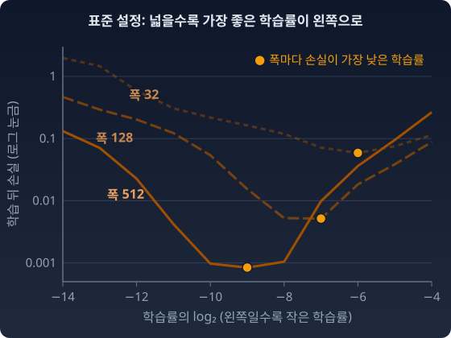

스케일링
학습률은 한 스텝에 파라미터를 얼마나 옮길지 정하는 숫자다. 보통은 몇 가지 값으로 학습을 짧게 돌려 보고 손실이 가장 잘 내려가는 값을 고른다. 모델이 작으면 이 일이 싸다. 한 번 학습하는 데 몇 주가 걸리는 큰 모델에서는 후보마다 처음부터 돌려 볼 수가 없다. 그래서 작은 모델에서 고른 값을 큰 모델에 옮겨 쓰고 싶어진다.
실제 대형 모델의 학습률은 크기마다 다르게 잡혀 있다. GPT-3 논문(브라운(Tom Brown) 외 2020)이 밝힌 모델 여덟 개 가운데 넷을 옮기면 이렇다. 폭은 한 층의 뉴런 수(논문의 dmodel)다.
| 모델 | 파라미터 수 | 층 수 | 폭 | 학습률 |
|---|---|---|---|---|
| GPT-3 Small | 1억 2500만 | 12 | 768 | 6.0 × 10⁻⁴ |
| GPT-3 XL | 13억 | 24 | 2048 | 2.0 × 10⁻⁴ |
| GPT-3 13B | 130억 | 40 | 5140 | 1.0 × 10⁻⁴ |
| GPT-3 175B | 1750억 | 96 | 12288 | 0.6 × 10⁻⁴ |
모델이 커질수록 학습률이 작아진다. 층 수도 함께 늘었으니 폭 하나만의 효과는 아니다. 그래도 물음은 남는다. 같은 설계에서 폭을 넓혔을 뿐인데 왜 같은 학습률이 맞지 않는가? 그리고 폭을 바꿀 때마다 학습률을 다시 찾지 않을 길은 없는가?
이 장에서 학습률(learning rate)은 lr 로 쓴다(흔히 쓰는 η 는 이 책에서 다른 양의 이름이다).
폭과 학습률: 좌표의 한 칸이 같은 거리가 아니다
대형 언어모델의 학습률은 폭이 넓을수록 작게 잡혀 왔다. GPT-3 에서 폭 768 모델은 6.0 × 10⁻⁴, 폭 12288 모델은 0.6 × 10⁻⁴ 였다. 폭을 바꿀 때마다 학습률을 처음부터 다시 훑어야 한다면, 가장 비싼 모델에서 가장 비싼 일을 되풀이하게 된다.
“왜 작은 모델에서 찾은 학습률이 큰 모델에서는 안 되는가? 매번 다시 찾아야 하는가?”
비유
레시피와 냄비 크기 — 4인분 레시피의 소금 1큰술. 40인분으로 늘리면 소금 10큰술? 비례하지 않는다. 냄비가 커지면 증발량, 열전도, 대류가 달라진다. 같은 "간"을 내려면 단순 비례가 아니라 냄비의 물리학을 이해해야 한다.
신경망도 마찬가지다. 폭(한 층의 뉴런 수)이 10배 커지면, 같은 학습률 0.01이 출력에 전혀 다른 크기의 변화를 만든다.
무엇이 관찰되는가
그레그 양(Greg Yang) 외의 Tensor Programs V(2022)는 이것을 그래프 한 장으로 보였다. 트랜스포머(오늘날 언어모델의 기본 구조)의 폭만 128부터 8192까지 바꾸고, 초기화와 학습률은 흔히 쓰는 표준 설정(SP, standard parametrization: 초기화와 학습률을 폭에 따라 어떻게 붙이는지의 규칙)대로 둔 채 Adam 으로 학습률을 훑었다. 폭마다 손실이 가장 낮은 학습률이 다른 곳에 있었고, 넓힐수록 그 자리가 작은 학습률 쪽으로 밀려났다. 아래 그림은 같은 현상을 이 책이 직접 돌린 작은 실험으로 다시 그린 것이다. 은닉층이 둘인 작은 신경망(폭 32, 128, 512)을 Adam 으로 300스텝 학습했다. 논문의 숫자가 아니다.

같은 논문은 초기화와 층마다의 학습률을 폭에 맞춰 다르게 붙이면 가장 좋은 학습률이 폭과 상관없이 한자리에 선다는 것도 보였다. 그 규칙은 「폭이 달라져도 특징이 같은 속도로 배우게」 하는 절에서 본다. 여기서는 먼저 왜 밀려나는지를 읽는다.
같은 학습률이 폭에 따라 왜 다른 뜻을 갖는가? 좌표의 한 칸이 어디서나 같은 거리가 아니기 때문이다. 그 불균등함을 재는 자가 피셔 정보 행렬(파라미터를 조금 바꿀 때 출력 분포가 얼마나 달라지는지를 방향마다 적은 행렬)이다. 가장 작은 예부터 보자. 층 하나에 출력 하나면 한 스텝이 출력을 얼마나 바꾸는지 손으로 끝까지 적을 수 있다.
가장 작은 예
폭 n 인 층 하나를 생각한다. 출력은 y = w·x 하나, 입력 x 의 좌표는 ±1 이다. 손실 ½(y − t)² 의 기울기는 (y − t)x 이다. 경사하강 한 스텝 뒤 출력의 변화는
기울기의 각 좌표는 작아도, 그 변화가 입력과 같은 방향으로 정렬되어 n 개가 한꺼번에 더해진다. 그래서 출력 변화가 n 에 비례한다. n 개의 무작위 부호를 더한 것처럼 √n 으로 자라는 것이 아니다. 폭을 4배로 늘리면 같은 효과를 내는 학습률은 4분의 1이다.
피셔 계량으로 읽기
계량은 곳마다 작은 걸음의 길이를 재는 규칙이고, 피셔 계량은 그 길이를 분포가 달라지는 정도로 잰다. 이 층이 평균 y, 분산 σ² 인 가우시안을 낸다고 보자. 가중치 공간의 피셔 정보는 출력 공간의 피셔(1/σ²)를 가중치로 끌어온 것이다.
오른쪽 식이 말하는 것은 단순하다. 피셔로 잰 걸음의 길이는 "출력이 얼마나 움직였나"를 출력의 눈금으로 잰 것이다. 경사 한 스텝 dw = −lr(y − t)x 에서 x·dw 가 n 에 비례하니, 피셔 길이도 n 에 비례한다. 유클리드 길이 ‖dw‖ 는 √n 에 비례할 뿐이다. 유클리드 자와 피셔 자가 폭에 따라 서로 다른 속도로 벌어진다.
“같은 숫자의 학습률이, 폭에 따라 다른 크기의 분포 변화를 만든다.”
파이썬
import numpy as np
rng = np.random.default_rng(0)
for n in [64, 256, 1024, 4096]:
x = rng.choice([-1.0, 1.0], n) # 입력: 좌표마다 크기 1
w = rng.standard_normal(n) / np.sqrt(n) # 표준 초기화
y, target, lr = w @ x, 1.0, 0.01
g = (y - target) * x # ½(y−t)² 의 기울기
y_new = (w - lr * g) @ x
print(f"n={n:5d} 출력 변화 {y_new - y:+.3f} = −lr·(y−t)·n = {-lr * (y - target) * n:+.3f}")
# n= 64 출력 변화 -0.707 = −lr·(y−t)·n = -0.707
# n= 256 출력 변화 +2.189 = −lr·(y−t)·n = +2.189
# n= 1024 출력 변화 +9.973 = −lr·(y−t)·n = +9.973
# n= 4096 출력 변화 +38.057 = −lr·(y−t)·n = +38.057
같은 lr = 0.01 이 n = 64 에서는 목표 쪽으로 알맞게 가고, n = 4096 에서는 38만큼 튀어 나간다.
수확
“같은 크기의 가중치 변화가 폭이 넓을수록 출력을 더 크게 바꾼다. 표준 설정에서 한 스텝이 만드는 출력 변화는 폭에 비례해서 커진다. 그래서 최적 학습률이 폭을 따라 움직인다.”
문제 1. 조원이 많아지면
조원들이 공유 문서에 적힌 행사 예산을 한 사람씩 고친다. 다들 「조금 모자라다」는 같은 판단이 있어서 각자 +1만 원을 더하고, 그 위에 자기 생각을 얹어 +2만 원이나 −2만 원(반반의 확률)을 더 고친다. 조원이 4명, 25명, 100명일 때 예산 전체는 대략 얼마나 바뀌는가? 같은 판단에서 온 몫과 제각각인 생각에서 온 몫을 따로 구해 견주어라.
함께 풀기

제각각인 몫이 ±2만 원이라 같은 판단 몫 1만 원보다 두 배 크잖아요. 사람이 많아져도 예산은 제각각인 생각에 휘둘리고, 같은 판단은 묻힐 것 같아요.

25명일 때 두 몫이 각각 얼마나 쌓이는지 따로 세어 봐요.

같은 판단 몫은 모두 +1 이니까 +25만 원이요. 제각각인 몫은 부호가 반반이라 서로 지워지고, 남는 건 √25 = 5 에 한 사람 몫 2를 곱한 10만 원쯤이고요. 어, 한 사람 몫은 제각각인 쪽이 두 배였는데, 쌓인 건 같은 판단 쪽이 2.5배네요.

4명이면 4 대 4로 비기고, 100명이면 100 대 20이야. 같은 판단 몫은 사람 수 n 에 비례하고 제각각인 몫은 2√n 이니까, 둘의 비 2/√n 이 사람이 늘수록 줄어. 많을수록 같은 쪽으로 미는 몫이 거의 전부가 돼.
조장이 한 번 돌 때 예산이 5만 원쯤만 움직이길 바란다면, 100명에게 각자 얼마씩 고치라고 해야 해요?
같은 판단 몫이 거의 전부니까 그 몫을 5/100 = 0.05만 원, 500원으로 줄여야죠. 사람 수에 반비례로요. 폭 n 층에서 학습률을 1/n 로 줄이는 거랑 같은 셈이네요.
문제 2. 같은 lr 로 세 스텝
위 「가장 작은 예」의 층(폭 n, 입력 좌표 ±1, y = w·x, 손실 ½(y − t)²)에 같은 입력으로 SGD 를 여러 번 건다. (가) 한 스텝 뒤 오차 y − t 는 몇 배가 되는가? 위 파이썬의 n = 256 층은 처음 오차가 y − t = −0.855 다. 여기에 lr = 0.01 로 세 스텝을 걸면 오차는 어떻게 되는가? (나) 오차가 끝없이 커지지 않는 lr 의 범위와, 오차가 목표를 넘어가지 않고(부호가 바뀌지 않고) 줄어드는 lr 의 범위를 n 으로 나타내라. (다) n = 64 에서 알맞던 lr = 0.01 을 그대로 쓰면, 폭이 얼마를 넘을 때부터 오차가 끝없이 커지는가?
함께 풀기
파이썬에서 n = 256 은 출력이 +2.189 움직였잖아요. 오차가 −0.855 니까 출력을 올려야 하는데 올라갔으니 방향은 맞아요. 세 번 하면 목표에 붙겠네요.
한 스텝 뒤의 오차를 직접 적어 봐요.

−0.855 + 2.189 = +1.334. 어? 처음보다 커졌어요. 목표를 지나쳐서 반대쪽으로 더 멀리 갔네요.
출력 변화가 −lr(y − t)n 이니까 새 오차는 (y − t)(1 − lr·n) 이야. 1 − 0.01 × 256 = −1.56 배. 세 스텝이면 +1.334, −2.081, +3.247. 부호를 바꿔 가며 1.56배씩 커져.
그럼 넘어가지만 않으면 되니까, 1 − lr·n ≥ 0, 곧 lr ≤ 1/n 이 끝없이 커지지 않는 범위네.
lr·n = 1.5 면 오차가 몇 배가 돼요?

1 − 1.5 = −0.5 배요. 부호는 바뀌는데 크기는 절반으로 줄어요. 넘어가도 줄어들 수 있네요. 끝없이 커지는 건 |1 − lr·n| > 1, 곧 lr·n > 2 일 때예요. 커지지 않는 범위는 0 < lr < 2/n 이고, 넘어가지 않는 범위는 그보다 좁은 0 < lr ≤ 1/n 이에요. n = 256 이면 0.0078 과 0.0039.
(다)는 0.01 × n > 2, n > 200 이요. 64 에서 두 배씩 넓히면 128 까지는 넘어가도 줄어들고, 256 부터 끝없이 커져요. 파이썬의 256 이 딱 거기 걸렸네요.
등비수열 ak+1 = r·ak 가 0 으로 가는 조건 |r| < 1 이랑 같아. r 이 음수면 부호를 바꿔 가며 0 으로 가는 진동 수렴이고. 해석학 시간에 (−½)k 를 그렸던 게 이거였네.
문제 3. 기울기 클리핑으로 걸음을 묶으면
학습이 튀는 것을 막으려고 흔히 기울기 클리핑(기울기 벡터의 유클리드 길이가 정한 값을 넘으면 그 값으로 줄이는 장치)을 건다. 「가장 작은 예」의 층에서 한 스텝의 걸음 dw 가 늘 유클리드 길이 0.05 로 잘린다고 하자(방향은 기울기 방향 그대로). (가) n = 1024 와 n = 4096 에서 이 걸음은 출력을 얼마나 움직이는가? (나) 출력 분산 σ² = 1 로 두고 이 걸음의 피셔 길이를 구하라. (다) 두 폭에서 출력이 같은 만큼 움직이게 하려면 n = 4096 의 자르는 길이를 얼마로 잡아야 하는가?
함께 풀기
걸음 길이를 0.05 로 묶었으니까 폭이 어떻든 같은 크기로 걷는 거잖아요. 클리핑만 걸면 폭 걱정은 끝 아니에요?
그 걸음이 출력을 얼마나 바꾸는지 n = 1024 에 넣어 봐요.

걸음이 x 방향이고 길이가 0.05 니까 x·dw = ‖x‖ × 0.05 = √1024 × 0.05 = 1.6. n = 4096 이면 √4096 = 64 라서 3.2 요. 길이는 같은데 출력은 두 배를 움직이네요.
유클리드 길이는 좌표마다의 작은 변화를 제곱해 더한 거라서, 걸음이 x 와 같은 방향이면 출력은 그 길이의 √n 배로 움직여. 피셔 길이로 재면 σ = 1 이라 x·dw 그대로, 1.6 과 3.2 야. 피셔 자는 두 걸음이 출력에 다른 크기라는 걸 그대로 보여 주고, 유클리드 자는 못 보여 줘.
그럼 n = 4096 에서도 출력이 1.6 만 움직이게 하려면요?
√n 에 반비례로, 0.05 × 32/64 = 0.025 요. 결국 폭마다 자르는 값을 다시 맞춰야 하네요. 클리핑은 튀는 걸 막는 안전띠지, 폭을 맞춰 주는 자는 아니구나.
보고서를 「10쪽 이내」로만 묶으면 글자를 줄여서 내용은 얼마든지 늘릴 수 있는 거랑 같네요. 쪽수가 아니라 내용으로 재야 분량이 맞춰지죠.